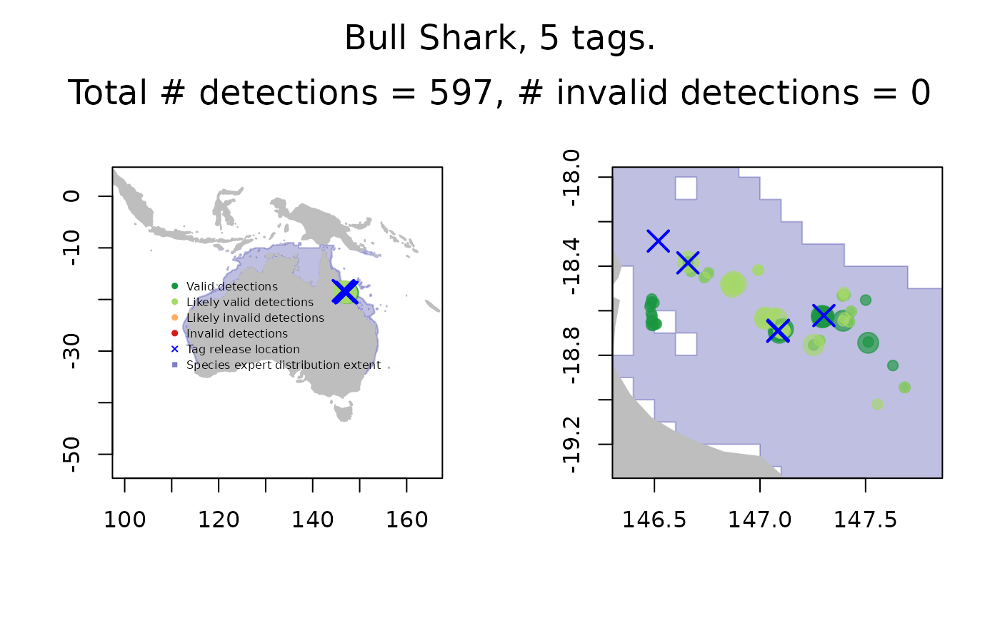

conduct quality control (QC) on IMOS-ATF acoustic detections data
runQC(x, .parallel = FALSE, .ncores = detectCores() - 2, .progress = TRUE)a 4-element list of paths to detections, receiver and transmitter deployment metadata, and animal measurements data files. These data must be downloaded from the IMOS-ATF Web App (URL), or have exactly the same structure and variable names as the Web App data.
logical; run QC tests in parallel across multiple processors (default is FALSE)
integer; number of cores to run in parallel. If NULL and
parallel = TRUE then process will run across all available cores,
otherwise run across user-specified cores
logical; display QC progress (default is TRUE).
the QC output is returned to the parent frame as a nested tibble
with class remora_QC
The QC process merges data from the supplied files downloaded via
the IMOS-ATF Web App (URL): IMOS_detections.csv;
IMOS_receiver_deployment_metadata.csv;
IMOS_transmitter_deployment_metadata.csv;
and IMOS_animal_measurements.csv. Eight quality control tests are
performed on the detections, as outlined in Hoenner et al. (2018), and
QC flags are appended to the merged data for each of these 8 tests.
The QC flags are values ranging between 1 and 4, representing valid,
likely valid, likely invalid, and invalid detections, respectively.
The user can then employ these flags, in various combinations, to filter the
merged data (see examples & vignette).
Utility functions are provided to subset the merged data in various ways
from the nested tibble and to visualise the QC results (see examples
& vignette).
A QC log is written to QC_logfile.txt in the working directory. The
logfile documents potential data issues discovered during the QC process:
e.g., transmitter_deployment_id's present in the detections
file but not in the transmitter metadata file (if supplied);
receiver_deployment_id's present in the detections file but not in the
receiver metadata file (if supplied); NA's present in transmitter deployment
locations. Generally, these issues can not be corrected automatically and
require the user to investigate the cause and take appropriate steps to
correct the data.
Hoenner, X et al (2018) Australia’s continental-scale acoustic tracking database and its automated quality control process. Scientific Data 5, 170206. https://doi.org/10.1038/sdata.2017.206
## specify files to QC - use supplied example .csv data
files <- list(det = system.file(file.path("test_data","IMOS_detections.csv"),
package = "remora"),
rmeta = system.file(file.path("test_data",
"IMOS_receiver_deployment_metadata.csv"),
package = "remora"),
tmeta = system.file(file.path("test_data",
"IMOS_transmitter_deployment_metadata.csv"),
package = "remora"),
meas = system.file(file.path("test_data",
"IMOS_animal_measurements.csv"),
package = "remora"))
qc.out <- runQC(files)
#> Reading data...
#> Starting sequential QC...
#>
file: A69-9002-14762_43669513_43669944, 1 of 5
file: A69-9002-14765_43669525_43669972, 2 of 5
file: A69-9002-13807_69918686_69918684, 3 of 5
file: A69-9002-13809_77523181_77523186, 4 of 5
file: A69-9002-13824_93016177_93016182, 5 of 5
plotQC(qc.out, path = NULL) # plots to default graphics device

## get detections with QC flags
d.qc <- grabQC(qc.out, what = "dQC")
## clean up
system("rm QC_logfile.txt")